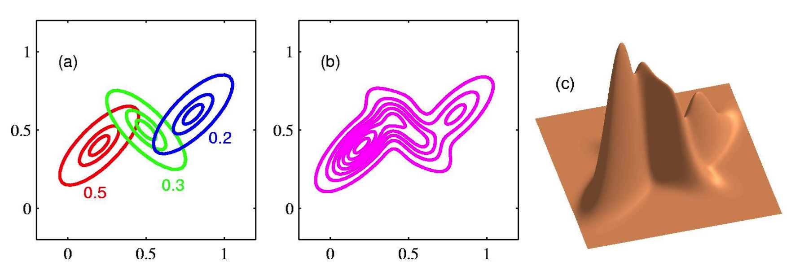
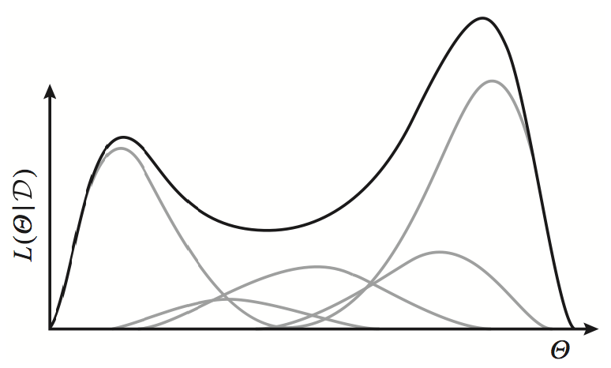

Mixture Models and the EM Algorithm
Latent variable models (LVMs)
An LVM p(x,z∣θ) is a probability distribution over two sets of variables x,z where:
- variables xn∈Rd are observed at learning time in a dataset D={x1,...,xN}, and
- latent/hidden variables zn are never observed.
Example: Gaussian mixture models (GMMs)
Our directed model: p(x,z∣θ)=p(x∣z,θ)p(z∣θ). Here z is a scalar.
- p(z∣θ)=Cat(z∣π). Specifically, π is a probability vector where p(z=k)=πk.
- p(x∣z=k,θ)=N(x∣μk,Σk).
This model postulates that our observed data is comprised of K clusters with proportions specified by π1,...πK; the distribution within each cluster is a Gaussian. We can see that p(x) is a mixture by explicitly writing
p(x)=k=1∑Kp(x∣z=k)p(z=k)=k=1∑KπkN(x∣μk,Σk)
To generate a new data point, we sample a cluster k and then sample its Gaussian N(x∣μk,Σk).

Reasons for modelling latent variables
-
Some data might be naturally unobserved. E.g. patients dropping out during a clinical trials.
-
LVMs enable us to leverage our prior knowledge when defining a model. E.g. topic modelling of news articles as a mixture of K distinct distributions (one for each topic).
-
LVMs increase the expressive power of our model.
Marginal likelihood training
Our goal is still to fit the marginal likelihood p(X). Applying the argument for KL divergence, we should maximize the observed data log-likelihood
ℓ(θ)=logp(D∣θ)=x∈D∑logp(x∣θ)=x∈D∑log(z∑p(x∣z,θ)p(z))
This optimization objective is considerably more difficult than regular log-likelihood, even for directed graphical models. Reasons:
- The summation inside the log makes it impossible to decompose p(x) into a sum of log-factors. Even if the model is directed, we can no longer derive a simple closed form expression for the parameters.
- Whereas a single exponential family distribution p(x) has a concave log-likelihood, the log of a weighted mixture of such distributions is no longer concave or convex (contrast with complete data log-likelihood ℓc(θ) which is concave). This non-convexity requires the development of specialized learning algorithms.

Learning LVMs
The Expectation-Maximization (EM) algo
Consider the complete data log-likelihood
ℓc(θ)≜logp(X,Z∣θ)=i=1∑Nlogp(xn,zn∣θ)
If latent Z were fully observed, we could compute ℓc(θ) and optimize it. However, since Z is unknown:
- we'll instead rely on a "soft" assignment of Z in the form of a posterior p(Z∣X,θ) to optimize the log-likelihood w.r.t. the parameters;
- the posterior p(Z∣X,θ) can often be efficiently computed if the parameters are known (an assumption, not ture for some models).
Our resulting tractable objective, auxillary function Q, is the expected complete data log-likelihood under latent variable distribution:
Q(θ,θold)=EZ∼p(Z∣X,θold)[ℓc(θ)]
EM follows a simple iterative two-step strategy:
- Given an estimate θold of the parameters, compute posterior p(Z∣X,θold) as the expected sufficient statistics for our MLE. This can be seen as a "soft" assignment of xn to K clusters (a hard assignment would assign xn to a single cluster).
- Then, find a new estimate θnew by optimizing Q w.r.t. θ. This process will eventually converge.
EM algo
-
Start at an initial θold.
-
E-step: Compute the posterior p(Z∣X,θold)
-
M-step: Compute the new paramters
θnew=θargmaxQ(θ,θold)
- Check for convergence of either the log-likelihood or the parameter values. If not converged, θold←θnew and return to step 2.
To perform MAP estimation, we modify the M-step as follows:
θnew=θargmaxQ(θ,θold)+logp(θ)
Example: GMMs
Auxiliary function
Here each data point is (xn,zn) and the complete data (X,z). The expected complete data log-likelihood is given by
Q(θ,θold)≜Ez∼p(z∣X,θold)[n∑logp(xn,zn∣θ)]=n∑Ezn∼p(zn∣xn,θold)[log[k=1∏K(πkp(x∣θk))I(zn=k)]]=n∑k∑Ezn∼p(zn∣xn,θold)[I(zn=k)]log[πkp(x∣θk)]=n∑k∑p(zn=k∣xn,θold)log[πkp(x∣θk)]=n∑k∑rnklogπk+n∑k∑rnklogp(xn∣θk)
where rnk≜p(zn=k∣xn,θold) is the responsibility that cluster k takes for data point i.
E-step
We calculate rnk explicitly as
rnk=p(zn=k∣xn,θold)=∑j=1Kp(zn=j)p(xn∣zn=j,θold)p(zn=k)p(xn∣zn=k,θold)=∑j=1KπjN(xn∣μj,Σj)πkN(xn∣μk,Σk)
M-step
We optimize Q w.r.t θ={πk,μk,Σk}k=1K. For π, we obviously have
πk=N1n∑rnk=Nrk
where rk≜∑nrnk is the weighted number of points assigned to cluster k.
For μk and Σk, consider the parts of Q that depend on μk and Σk. We have
ℓ(μk,Σk)=n∑k∑rnklogp(xn∣θk)=−21n∑rnk[log∣Σk∣+(xn−μk)TΣk−1(xn−μk)]
The new parameter estimates are thus given by
μkΣk=rk∑nrnkxi=rk∑nrnk(xn−μk)(xn−μk)T=rk∑nrnkxnxnT−μkμkT
These equations make intuitive sense: the mean of cluster k is the weighted average of all points assigned to cluster k, and the covariance is proportional to the weighted empirical scatter matrix.
EM as variational inference
TBC
Properties of EM
Convergence is guaranteed for EM because:
- The marginal likelihood increases after each EM iteration.
- The marginal likelihood is upper-bounded by its true global maximum
However, since the objective is non-convex, we have no gurantee to find the global optimum. In fact, EM in practice converges almost always to a local optimum, and moreover, that optimum heavily depends on the choice of initialization. Thus it is very common to use multiple restarts of the algorithm and choose the best one in the end.
Reference materials
- Murphy, K. P. "Mixture Models and the EM Algorithm." Machine Learning: A Probabilistic Perspective.
- Kuleshov, V. and Ermon, S. "Learning in latent variable models." cs228-notes. Accessed Nov 5, 2021. https://ermongroup.github.io/cs228-notes/learning/latent/.